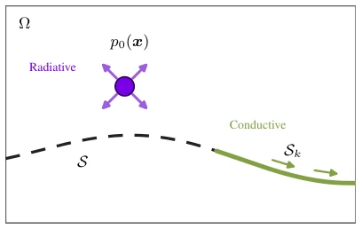
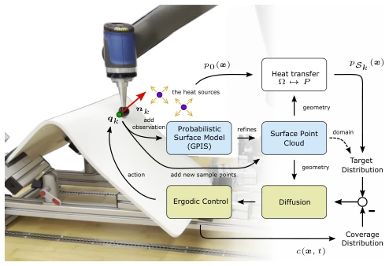
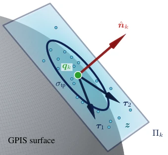
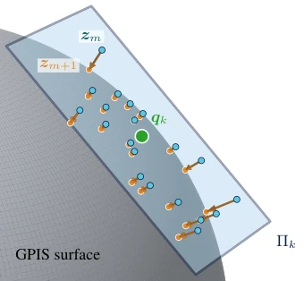
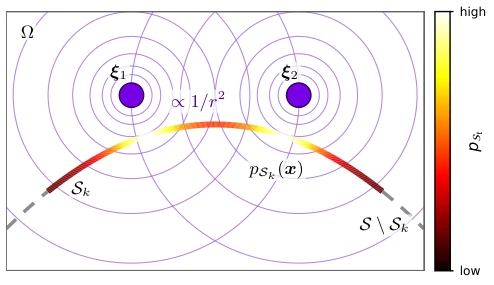
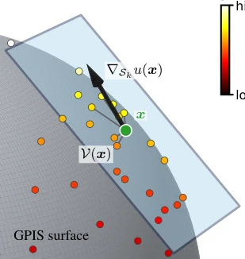
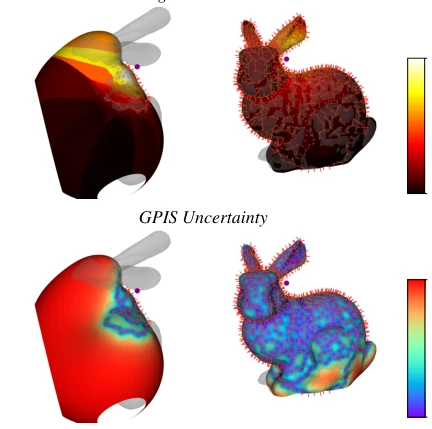
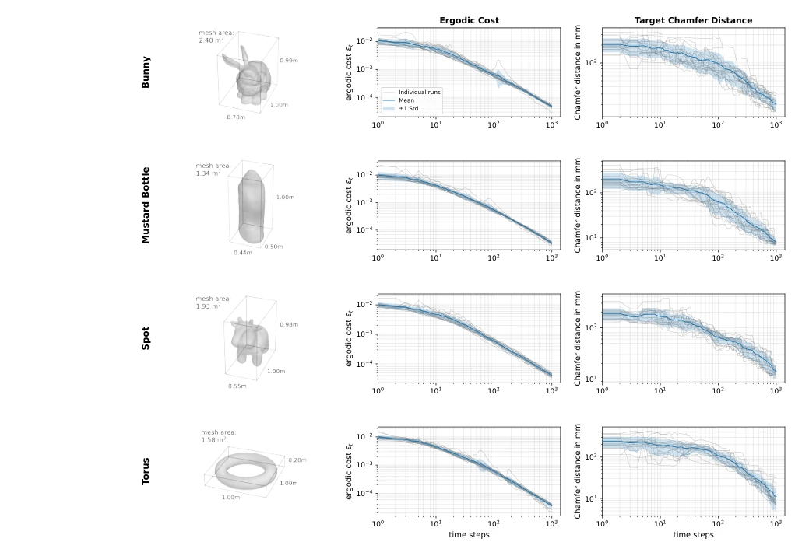
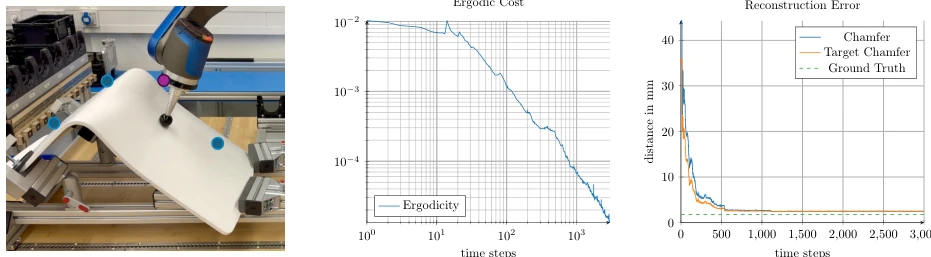
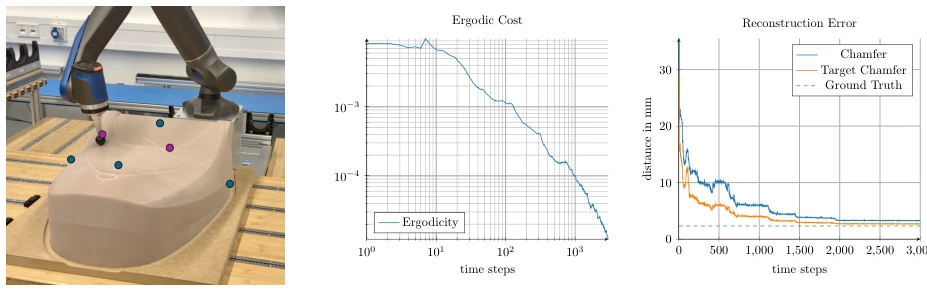

This paper finally enables robots to cease "blind men touching an elephant". Ergodic control typically relies on known maps, whereas this paper constructs maps while feeling directly. Using GPIS for global tactile modeling, coupled with the heat diffusion equation for local planning, the approach is highly elegant. However, pure tactile schemes may be less efficient than vision on smooth or transparent objects, and GPIS updates entail significant computational overhead in large-scale spaces. Although the authors claim "no offline planning required", actual deployment demands extremely high force control precision; slight jitter may lead to normal estimation errors, subsequently causing projection divergence. Overall, this is a beautiful attempt at coupling tactile perception and motion planning, but it still lacks some "universal" capability, especially when handling high-curvature regions; the projection step is crucial, otherwise point clouds will drift away from the surface.
研究动机Motivation
现有 Ergodic 控制方法（Mathew and Mezić 2011; Ivić et al. 2017）大多假设环境几何已知，这在实际作业中往往不成立。视觉重建（Berger et al. 2017）虽能提供几何信息，但受限于遮挡、反光和透明材质，难以保证鲁棒性。这导致了一个死循环：规划覆盖轨迹需要几何知识，获取几何知识又需要覆盖轨迹。因此，如何在未知表面上同步进行几何学习与覆盖控制成为关键。本文旨在打破这一僵局，利用触觉传感在探索中在线重建表面，避免了对 CAD 模型或预先扫描的依赖，提升了机器人在非结构化环境中的适应能力。
Existing Ergodic control methods (Mathew and Mezić 2011; Ivić et al. 2017) mostly assume environment geometry is known, which often does not hold in actual operations. Visual reconstruction (Berger et al. 2017) can provide geometric information, but is limited by occlusion, reflection, and transparent materials, making robustness hard to guarantee. This leads to a deadlock: planning coverage trajectories requires geometric knowledge, and acquiring geometric knowledge requires coverage trajectories. Therefore, how to perform geometric learning and coverage control synchronously on unknown surfaces becomes key. This paper aims to break this deadlock, utilizing tactile sensing to reconstruct surfaces online during exploration, avoiding reliance on CAD models or pre-scanning, improving robots' adaptability in unstructured environments.

Figure 3. Task setup: the robot explores an unknown surface S within the domain Ω; the observed portion Sk (green) grows over time. A user-specified heat source p0(x) radiates onto the surface, while heat also conducts along the observed surface.
The core framework contains two stages: tactile perception and heat diffusion planning. First, obtain contact points and normals using force-controlled contact, updating the global geometric model online via Gaussian Process Implicit Surfaces (GPIS). To solve the problem of GPIS being computationally expensive for direct planning, a dual representation architecture is proposed: sampling on the tangent plane at contact points to generate point clouds, and projecting back to the GPIS zero level set to construct a discrete control domain. The projection step is crucial, capable of correcting tangent plane approximation errors in high-curvature regions. The planning part adopts two-stage heat diffusion: the first stage radiates heat sources in the workspace to the current surface estimate to obtain the target distribution; the second stage conducts heat diffusion along the surface to calculate the potential field. Finally, surface gradients are estimated via local linear least squares to generate control commands. This design retains global geometric consistency while ensuring local planning efficiency, achieving a tight closed loop between perception and control.

Figure 1. Framework combining ergodic control and

Figure 4. Tangent plane sampling at a contact point qk (green) on the current GPIS zero-level set estimate (gray surface). The GPIS normal ˆnk defines the local tangent plane Πk with orthonormal basis Tk = [τ1, τ2]. Points z are drawn from a Gaussian in the tangent plane (15) (spread σtp shown as the circle) and collected in the point cloud Z.

Figure 5. Projection refinement of the tangent plane samples. One refinement step moves each point zm from the tangent plane Πk (Fig. 4) toward the current GPIS zero-level set estimate along the estimated normal by the signed distance (16), giving the updated point zm+1; the step is iterated until the point reaches the surface. Corrections vanish near the contact qk, where the tangent plane already matches the surface, and grow with distance as curvature bends the surface away from the plane.

Figure 6. Radiative heat transfer from sources to surface (2D illustration). Two point heat sources ξ1, ξ2 of equal weight in the domain Ωradiate with intensity decaying as 1/r2 (iso-intensity contours). The induced target distribution on the observed surface Sk (20) is shown as the color along the surface, peaking where the surface is closest to a strong source. The dashed continuation S \ Sk marks the not-yet-observed remainder of the surface, for which no target density is defined.

Figure 7. Surface gradient estimation of a scalar field u on the current GPIS zero-level set estimate. The field is known at the points (colored by u). At the query point x (green), a local linear least squares fit over the neighborhood V(x) (the MV nearest points, connected by thin lines) estimates ∇u(x), which is projected onto the tangent plane Πk to give the surface gradient ∇Sku(x) pointing toward increasing u.
Verified on simulation (Stanford Bunny) and real robot (chair, backboard). Metrics include Ergodic cost and Chamfer distance. Compared with uncertainty gradient strategy (Driess et al. 2017), results show the proposed method is significantly better in coverage quality, with lower and continuously decreasing Ergodic cost, while the comparative method's cost rises later. Reconstruction error converges with exploration steps, and target-weighted Chamfer distance approaches the ground truth. Multi-run analysis indicates the algorithm has robustness under different starting points and heat source configurations. Experiments prove the feasibility of synchronously achieving high-precision coverage and geometric reconstruction on unknown surfaces, especially maintaining good coverage uniformity in high-curvature regions (such as rabbit ears).

Figure 8. Bunny surface reconstruction at early (time step 150) and late (time step 6570) exploration, showing target distribution (warmer colors indicate proximity to heat source; the purple point marks the heat source location) and GPIS prediction uncertainty (blue indicates lower uncertainty, red indicates higher uncertainty), with colorbars at right.

Figure 10. Multi-Run Analysis (20 runs per object): Each row shows one object’s geometry (left) alongside its mean ergodic cost (center) and mean target Chamfer distance (right), each with a ±1 standard deviation error band over the individual runs (gray). Across all objects (Stanford bunny, YCB mustard bottle, spot, and torus), both metrics converge consistently with narrow standard-deviation bands under randomized start points and heat configurations.

Figure 11. Chair Experiment: Physical setup (left), where the blue points mark the boundary of the domain space and the purple point shows the heat source; ergodic cost convergence (middle); and reconstruction error (right) showing Chamfer distance (blue), target-weighted variant (orange), and statistical floor from ground truth sampling (green).

Figure 12. Backpanel Experiment: Physical setup (left), where the blue points mark the boundary of the domain space and the purple points show the two heat sources; ergodic cost convergence (middle); and reconstruction error (right) with Chamfer distance (blue), target-weighted variant (orange), and ground truth floor (green).